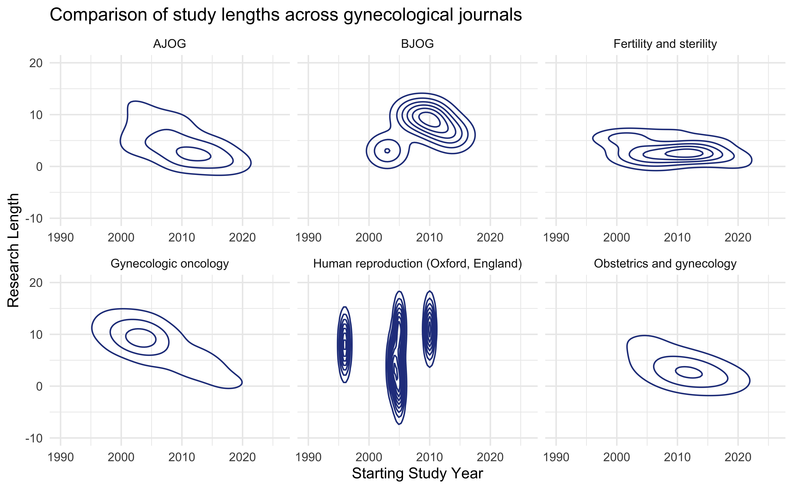

# A tibble: 318 × 65
pmid doi jabbrv journal year month day title abstract keywords
<dbl> <chr> <chr> <chr> <dbl> <chr> <chr> <chr> <chr> <chr>
1 31764726 10.1097/AO… Obste… Obstet… 2020 04 03 Desi… To eval… Adult; …
2 31492539 10.1016/j.… Gynec… Gyneco… 2019 11 05 Medi… To comp… Health …
3 30890269 10.1016/j.… Gynec… Gyneco… 2019 07 05 Iden… Germlin… Adult; …
4 29605049 10.1016/j.… Gynec… Gyneco… 2018 07 10 Expl… To eval… High vo…
5 28800945 10.1016/j.… Gynec… Gyneco… 2018 07 10 Impa… Althoug… Age; Di…
6 27697287 10.1016/j.… Gynec… Gyneco… 2017 05 29 The … Enrollm… Clinica…
7 27103178 10.1016/j.… Gynec… Gyneco… 2017 05 01 Surg… To eval… Delayed…
8 28159409 10.1016/j.… Gynec… Gyneco… 2017 05 25 Disp… To exam… Adenoca…
9 26706661 10.1016/j.… Gynec… Gyneco… 2016 06 01 Dyin… To iden… Advance…
10 26325527 10.1016/j.… Gynec… Gyneco… 2016 01 07 Asse… Sexual … Depress…
# ℹ 308 more rows
# ℹ 55 more variables: study_aim <chr>, study_location <chr>,
# study_year_start <dbl>, study_year_end <dbl>, study_type <chr>,
# data_source <chr>, race1 <chr>, race1_ss <dbl>, race2 <chr>,
# race2_ss <dbl>, race3 <chr>, race3_ss <dbl>, race4 <chr>, race4_ss <dbl>,
# race5 <chr>, race5_ss <dbl>, race6 <chr>, race6_ss <dbl>, race7 <chr>,
# race7_ss <dbl>, race8 <chr>, race8_ss <dbl>, eth1 <chr>, eth1_ss <dbl>, …Analysis of Racial and Ethnic Disparities in Gynecological Studies
INFO 526 - Summer 2024 - Final Project
Introduction
Data and Purpose
TidyTuesday contains a repository of reproductive journals, each with values of the counts for racial and ethnic categories.
Data is taken from 2010-2023
With a background as a software engineer in the healthcare industry, I was interested to see how this data would change over time.
Description of Data
Viewed below, the data is contained of 318 research articles, each with 61 features. Features contain basic journal information such as the journal, article name, year of publication, and the racial makeup of the article.
Reference https://github.com/rfordatascience/tidytuesday/blob/main/data/2025/2025-02-25/readme.md
Research Questions
I provided two questions for review.
- How have ethnic and racial inclusion into research changed across time?
- How is the length of a study noticeable between different journals?
The overarching concept is to understand how trends could be seen over time.
Data analysis
After review, cleansing was found to be the most intensive process.
Many features were not needed (e.g., article name), as aggregation would be used.
A challenging question was on designation of race stratification.
- Race and ethnicity were not standardized across journal nor across article, making this challenging.
Data Cleansing
Overview
Cleansing used in these stages
- Stratifying race/ethnicity
- Pivoting the dataframe to be able to use for analysis
- Aggregate values
- Alter values to proportions rather than raw values
Stratifying Race and Ethnicity
I manually reviewed mappings of values to ensure accuracy.
Originally, automation via regex was considered, but not implemented due to risk of incorrect categorization.
For values that I could not identify, instead of a risk of missclassification, I identified as a separate category.
Values were stratified into: American Indian or Alaskan Native, Asian, Black, Hispanic, Hawaiian or Pacific Islander, Other (Unknown), White, and Uncategorizable.
Pivoting
Rows were designed as containing all values of race. This was pivoted to support visualization aggregation.
| Journal | race1 | race1ss | race2 | race2ss |
|---|---|---|---|---|
| Journal A | White | 10 | Asian | 3 |
| Journal | Race | Race Count |
|---|---|---|
| Journal A | White | 10 |
| Journal A | Asian | 3 |
Aggregation
Values were aggregated across year and race to support a high level view of counts.
| Journal | Year | Race | Race Count |
|---|---|---|---|
| A | 2010 | White | 7 |
| B | 2011 | Asian | 5 |
| B | 2011 | Asian | 3 |
Into
| Year | Race | Total Count |
|---|---|---|
| 2010 | White | 7 |
| 2011 | Asian | 8 |
Proportions
Instead of using raw values, proportions were assigned. This was more accurate to provide a better understanding as to how an increase or decrease in disparities were conducted.
- Example: if the number of publications increased over the years, by default we could expect the number of people involved in studies to increase
Research Questions
Racial & Ethnic Inclusion Over Time
- How have ethnic and racial inclusion into research changed across time?
Warning: Using `size` aesthetic for lines was deprecated in ggplot2 3.4.0.
ℹ Please use `linewidth` instead.Warning: The `labeller` API has been updated. Labellers taking `variable` and `value`
arguments are now deprecated.
ℹ See labellers documentation.
Comparison of Study Length
- How is the length of a study noticeable between different journals?
- Took 3 features, removed missing and filtered those without lengths
article_lengths <- articles[c('study_year_start',
'study_year_end',
'journal')] |>
mutate(research_length = study_year_end - study_year_start) |>
filter(!is.na(study_year_start) &
study_year_start > 0 & study_year_end > 0 )Comparison of Study Length
Warning: The `labeller` API has been updated. Labellers taking `variable` and `value`
arguments are now deprecated.
ℹ See labellers documentation.Warning: Removed 18 rows containing non-finite outside the scale range
(`stat_density2d()`).
Analysis
Analysis
Comparison of race/ethnicity across time
Not much change
2020: highlight of 98% of values were listed as
Unknown
Comparison of study length
Journals seemed to have trends of lengths
Family and sterility being less than 5
BJOG around 10
Human reproduction started in incremental years:
- 2000, 2005, 2010